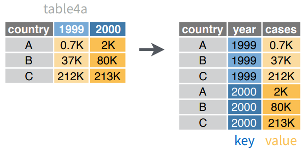
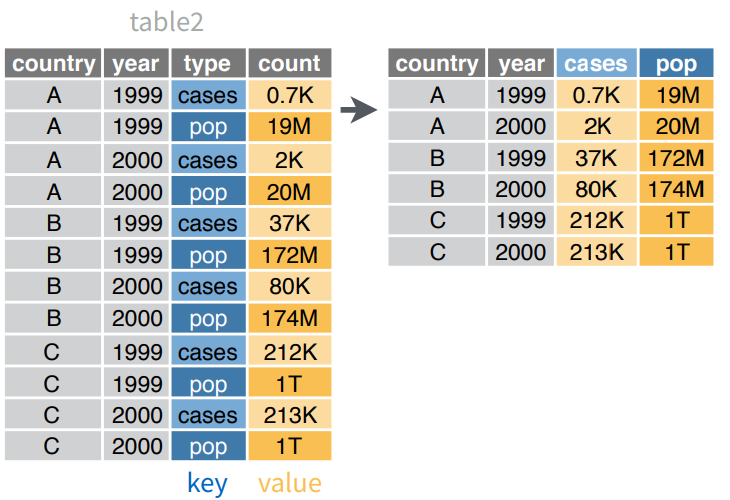
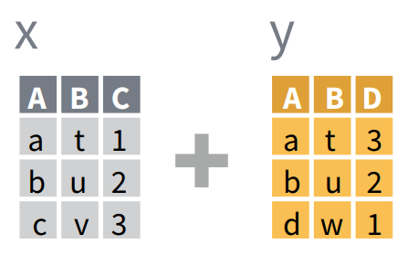
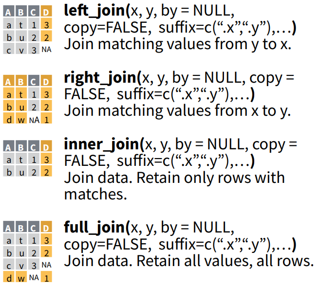

Elementos del Data Science con R
Manipulación de Datos 2 - Exportación
Manipulación de Datos 2 y Exportación
Manipulación de Datos 2
Datos a utilizar
## # A tibble: 3 x 3
## country `1999` `2000`
## * <chr> <int> <int>
## 1 Afghanistan 745 2666
## 2 Brazil 37737 80488
## 3 China 212258 213766## # A tibble: 12 x 4
## country year type count
## <chr> <int> <chr> <int>
## 1 Afghanistan 1999 cases 745
## 2 Afghanistan 1999 population 19987071
## 3 Afghanistan 2000 cases 2666
## 4 Afghanistan 2000 population 20595360
## 5 Brazil 1999 cases 37737
## 6 Brazil 1999 population 172006362
## 7 Brazil 2000 cases 80488
## 8 Brazil 2000 population 174504898
## 9 China 1999 cases 212258
## 10 China 1999 population 1272915272
## 11 China 2000 cases 213766
## 12 China 2000 population 1280428583## # A tibble: 3 x 4
## country `2011` `2012` `2013`
## <chr> <int> <int> <int>
## 1 FR 7000 6900 7000
## 2 DE 5800 6000 6200
## 3 US 15000 14000 13000¿Como obtendríamos el promedio por país?
¿Como obtendríamos el promedio por país?
## # A tibble: 3 x 5
## country `2011` `2012` `2013` promedio
## <chr> <int> <int> <int> <dbl>
## 1 FR 7000 6900 7000 6967
## 2 DE 5800 6000 6200 6000
## 3 US 15000 14000 13000 14000Ahora pensemos en una tabla más grande, con más años
gather Recolectar
Coloca nombres de columnas en una variable (columna) key, recolectando los valores (value) de las columnas en un sola columna

gather Ejemplo

gather Código
## # A tibble: 6 x 3
## country year cases
## <chr> <chr> <int>
## 1 Afghanistan 1999 745
## 2 Brazil 1999 37737
## 3 China 1999 212258
## 4 Afghanistan 2000 2666
## 5 Brazil 2000 80488
## 6 China 2000 213766spread Esparcir
Esparce un par de columnas (2, key-value) en multiples columnas

spread Ejemplo

spread Código
## # A tibble: 6 x 4
## country year cases population
## <chr> <int> <int> <int>
## 1 Afghanistan 1999 745 19987071
## 2 Afghanistan 2000 2666 20595360
## 3 Brazil 1999 37737 172006362
## 4 Brazil 2000 80488 174504898
## 5 China 1999 212258 1272915272
## 6 China 2000 213766 1280428583Joins: Combinar tablas

Joins Ejemplos

Joins Código
x <- data_frame(
A = c("a", "b", "c"),
B = c("t", "u", "v"),
C = c(1, 2, 3)
)
y <- data_frame(
A = c("a", "b", "c"),
B = c("t", "u", "w"),
D = c(3, 2, 1)
)
x## # A tibble: 3 x 3
## A B C
## <chr> <chr> <dbl>
## 1 a t 1.00
## 2 b u 2.00
## 3 c v 3.00## # A tibble: 3 x 4
## A B C D
## <chr> <chr> <dbl> <dbl>
## 1 a t 1.00 3.00
## 2 b u 2.00 2.00
## 3 c v 3.00 NA## # A tibble: 3 x 4
## A B C D
## <chr> <chr> <dbl> <dbl>
## 1 a t 1.00 3.00
## 2 b u 2.00 2.00
## 3 c w NA 1.00## # A tibble: 2 x 4
## A B C D
## <chr> <chr> <dbl> <dbl>
## 1 a t 1.00 3.00
## 2 b u 2.00 2.00## # A tibble: 4 x 4
## A B C D
## <chr> <chr> <dbl> <dbl>
## 1 a t 1.00 3.00
## 2 b u 2.00 2.00
## 3 c v 3.00 NA
## 4 c w NA 1.00Exportación
Destinos
Los datos puden exportarse de muuuuchas formas
- Archivo de texto
- Excel
- SPSS
- Bases de Datos
Funciones para exportar
Dependiendo de la fuente se requiere uan función de un paquete en particular
- Si es archivo de texto csv:
write_csvdel paquetereadr(que viene en eltidyverse) - Si es un archivo de texto:
write_delimdel paquetereadres una función más general - Si es un excel:
write_xlsxdel paquetewritexl - Y así…
Ejercicio Práctico
Ejercicio 1 - ¿Qué sucede?
people <- data_frame(
name = c("Phillip Woods", "Phillip Woods", "Phillip Woods",
"Jessica Cordero", "Jessica Cordero"),
key = c("age", "height", "age", "age", "height"),
value = c(45, 186, 50, 37, 156)
)
people## # A tibble: 5 x 3
## name key value
## <chr> <chr> <dbl>
## 1 Phillip Woods age 45.0
## 2 Phillip Woods height 186
## 3 Phillip Woods age 50.0
## 4 Jessica Cordero age 37.0
## 5 Jessica Cordero height 156## Error: Duplicate identifiers for rows (1, 3)Ejercicio 2
Volviendo a:
## # A tibble: 3 x 4
## country `2011` `2012` `2013`
## <chr> <int> <int> <int>
## 1 FR 7000 6900 7000
## 2 DE 5800 6000 6200
## 3 US 15000 14000 13000Calcule el promedio usando una forma mas elegante
Ejercicio 2 - Solución
cases %>%
gather("año", "valor", `2011`:`2013`) %>%
group_by(country) %>%
summarise(promedio = mean(valor))## # A tibble: 3 x 2
## country promedio
## <chr> <dbl>
## 1 DE 6000
## 2 FR 6967
## 3 US 14000